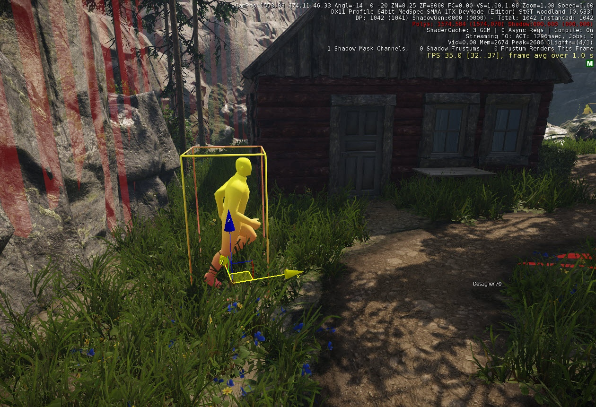
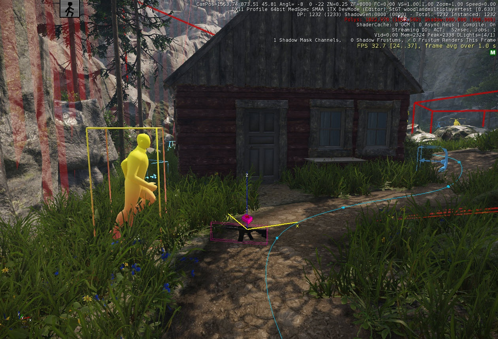
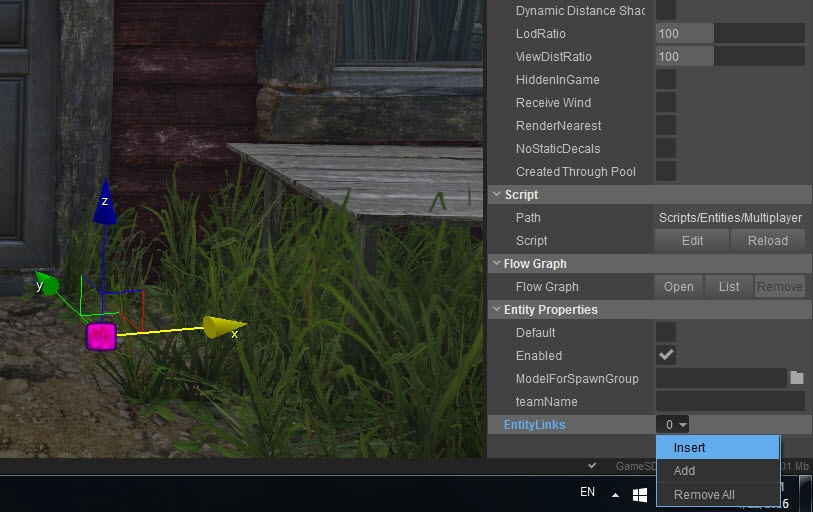
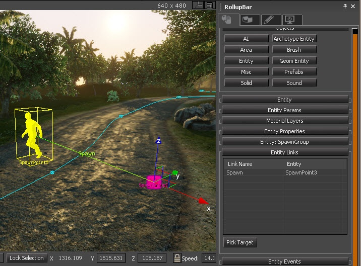
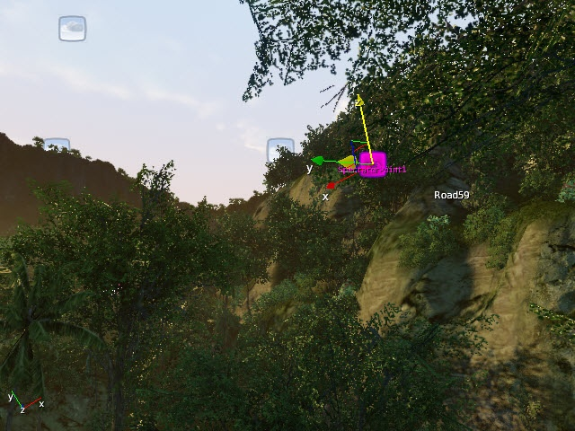

Обзор
В этом руководстве показано, как создавать и настраивать многопользовательские уровни с помощью CRYENGINE SDK.
Точки появления
Перетащите несколько SpawnPoint Перемещайте объекты на свой уровень и вращайте их так, чтобы при появлении игроков у них было четкое представление о своем окружении.
Точки появления находятся на панели создания: Сущность\Другие\SpawnPoint
Рис1: SpawnPoint размещено 
Пикапы
По умолчанию в SDK игроки появляются с небольшим количеством оружия и большим количеством боеприпасов. Чтобы у игроков всегда было оружие и боеприпасы, перетащите на уровень несколько видов оружия, желательно рядом с точками появления.
Обычно вам нужно установить различные типы оружия, а также различные боеприпасы. Оружие можно добавить из Создать объект инструмент -> Сущность -> Предметы список на ваш уровень:
Рис2: Добавлено оружие. 
Для объектов Оружия и AmmoPickups в Свойства сущности (который вы можете найти, выбрав предмет «Оружие» или «AmmoPickup» и открыв Свойства инструмент) вам необходимо установить:
- выбираемый
- Годный к употреблению
- Возрождение
- Таймер (в секундах)
Вы можете добавлять или удалять оружие, предметы и боеприпасы у игроков, начиная экипировку, перейдя в Игра -> Редактировать пакеты снаряжения. Обратитесь к руководству для получения дополнительной информации.
Если вы разместите SpawnGroups, вы сможете указать разные пакеты снаряжения для каждого SpawnGroup.
Размещение SpawnGroups
SpawnGroup позволяет вам группировать SpawnPoints вместе. Это можно использовать для создания командных многопользовательских уровней, а также для назначения игрокам различных возможностей или пакетов снаряжения.
Поместите SpawnGroup из Создать объект инструмент -> Сущность -> Мультиплеер -> SpawnGroup.
После перетаскивания объекта в представление «Перспектива» свяжите SpawnGroup с любым количеством SpawnPoints, выбрав «Выбрать цель» в свойствах SpawnGroup.
Рис.3: Соединение SpawnGroup с SpawnPoints 
Далее важно переименовать ссылку в «Spawn» или «SpawnGroup».
Рис.4. Указание имени ссылки. 
Теперь настройте второй SpawnGroup для другой группы SpawnPoints.
Размещение SpectatorPoints
Перетащите объект точки наблюдения из объектов многопользовательской игры в важные области вашего уровня, чтобы пользователи могли видеть действие во время их повторного появления.
Рис5: Размещение точек наблюдения. 
Когда игроки подключаются к серверу, их камеры перемещаются к точке наблюдения. Очки наблюдателя можно найти в разделе «Сущности» в каталоге многопользовательской игры.
Если у вас нет зрительских очков, зрители начнут просмотр с позиции 0,0,0.
Поверните его так, чтобы Y+ (зеленая стрелка) помощника смотрела на ключевые места игрового процесса. Хорошей идеей будет разместить SpectatorPoint где-нибудь в воздухе, чтобы обеспечить обзор местности.
Блокировка выхода игроков из игровой зоны
Вы можете использовать Designer Tool построить стену простой геометрии вокруг игровой зоны, чтобы не дать игрокам уйти. Убедитесь, что вы назначили materials/special/collision_proxy_entitiesonly материал для объектов дизайнера, чтобы он отображался только в редакторе, а не в игровом режиме.
MiniMap
Пожалуйста, ознакомьтесь с Миникарты местности раздел для помощи в создании мини-карты. Однако настройка UI для многопользовательской игры выходит за рамки данного руководства.
Настройка многопользовательской карты
Экспортируйте уровень в игровой движок, чтобы вы могли увидеть свой уровень в самой последней версии в реальном игровом режиме. Для получения помощи по экспорту уровня см. Экспорт уровня для игры учебник.
Пожалуйста, посмотрите Настройка уровня XML для получения дополнительной информации о настройке файла уровня .XML.